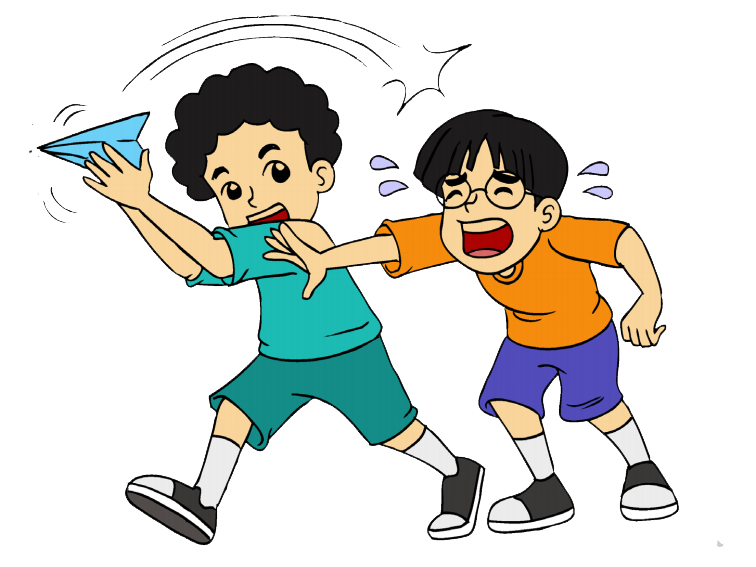
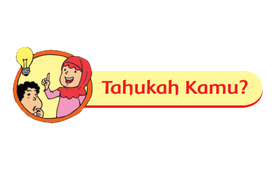
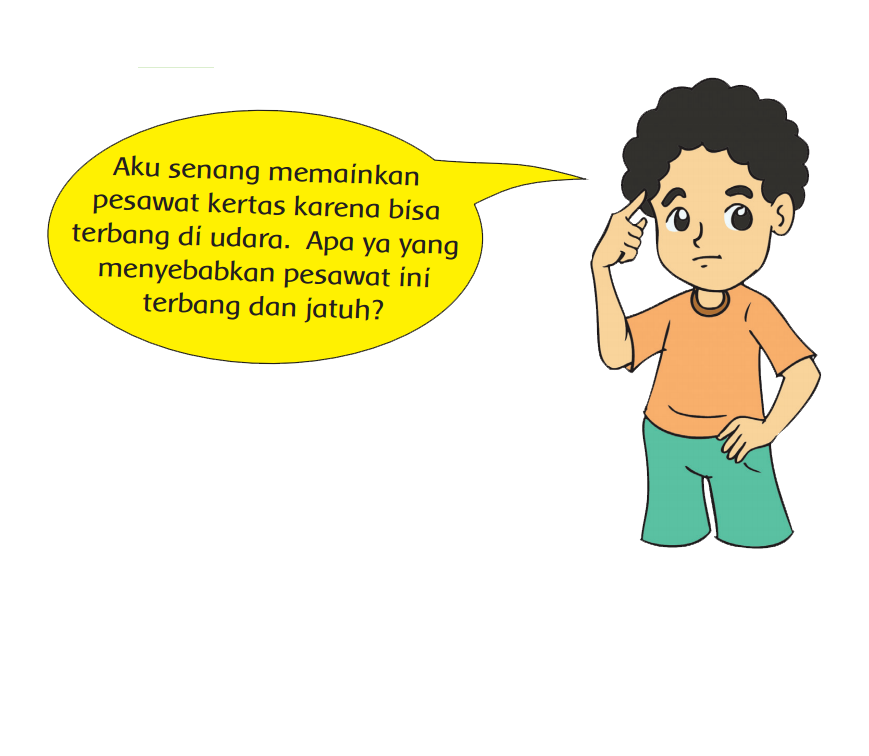

Gaya, Gerak, dan Energi di Sekitar Kita
Bacalah Teks berikut! Udin dan Edo senang sekali memainkan pesawat kertas. Mereka membuat pesawat kertas bersama. Saat diterbangkan, pesawat melayang di udara dan kemudian jatuh di ujung halaman rumah. Udin dan Edo menerbangkan pesawatnya sekali lagi dan mereka sangat senang melihat pesawat terbang ke sana ke mari. Untuk yang kedua kalinya, pesawat jatuh. Kali ini jatuh di jalan. Udin langsung mengambilnya dan bermaksud akan menerbangkannya kembali. Tiba-tiba, Edo merebut pesawat yang dipegang Udin. Pesawat kertas tersebut sobek. Udin marah dan mereka bertengkar. Jawablah pertanyaan berikut dan diskusikan jawabannya dengan temanmu.
1. Jenis energi apa yang kamu temukan pada cerita di atas?
2. Jenis gaya apa yang kamu temukan saat pesawat kertas akan bergerak dan saat pesawat kertas berhenti bergerak?
3. Apa yang menyebabkan Udin dan Edo bertengkar?
4. Apa saranmu agar Udin dan Edo tidak bertengkar?
5. Adakah sikap yang bisa kalian contoh? Mengapa?